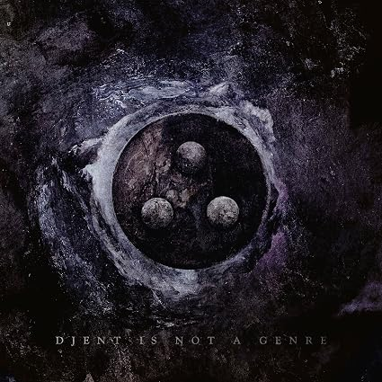
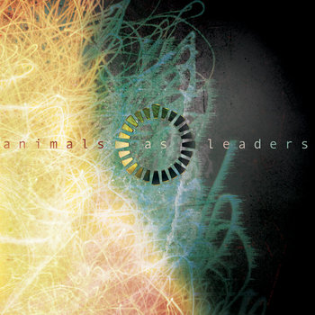
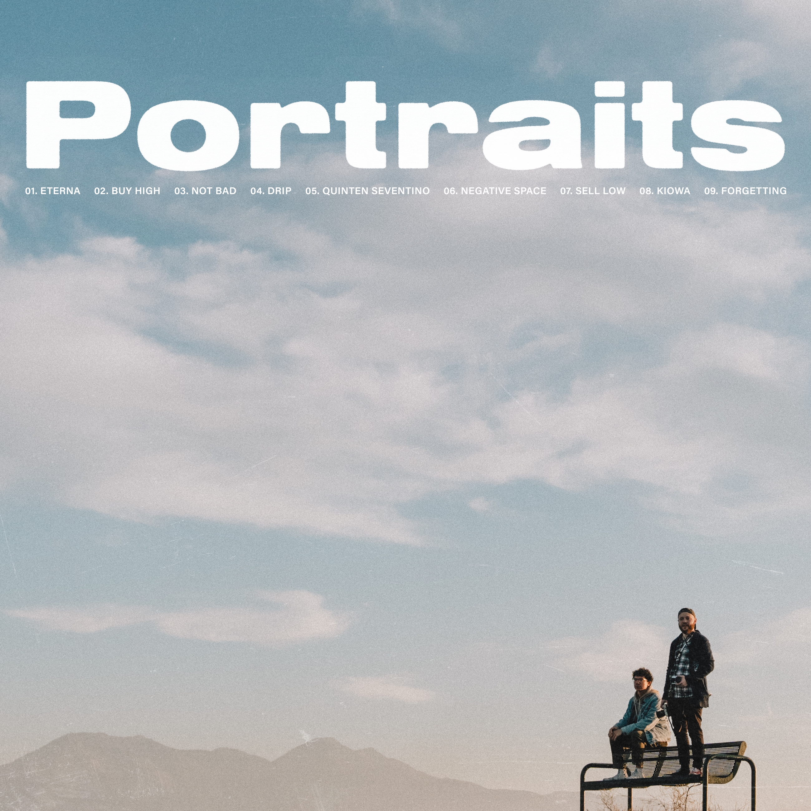
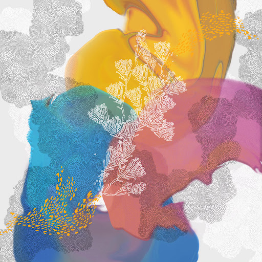
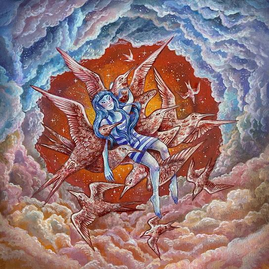
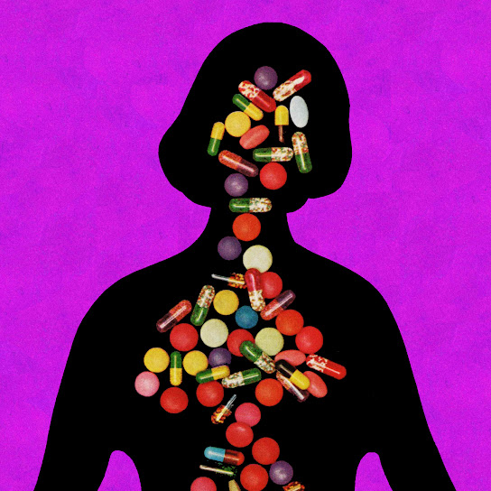
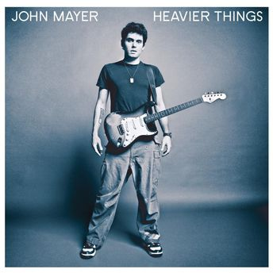
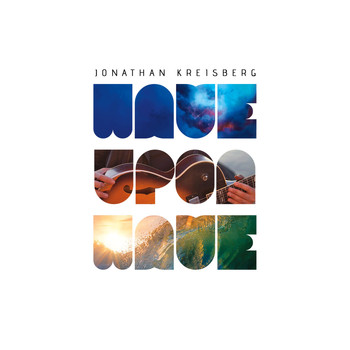
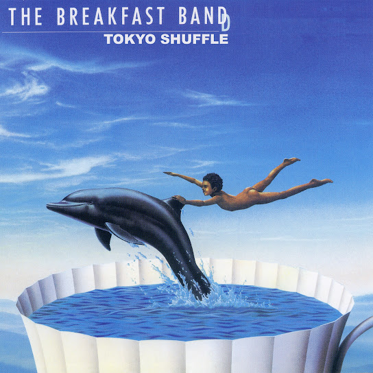

Salut ! Tu retrouveras dans ce tableau une sélection de 10 morceaux que j'aime bien :D Si tu ne sais pas où commencer, il y a un mode lecture aléatoire en bas de page ! Et pour plus de bulles, c'est par là! Bonne écoute :) |
||||||
|---|---|---|---|---|---|---|
| Artiste / Groupe | Titre | Cover | Année | Genre musical | Lecture | |
| Periphery | Wax Wings |  Periphery V : Djent is not a genre |
2023 | Metal Progressif / Djent | ||
| Animals as Leaders | Tempting Time |  Animals as Leaders |
2009 | Metal Progressif | ||
| Portraits | Buy High |  Buy High |
2023 | Rock / Metal Progressif | ||
| eleventwelfth ft Mario Camarena | KALA |  SIMILAR |
2023 | Math Rock | ||
| Covet | Lovespell |  Catharsis |
Math Rock | |||
| TV Girl & George Clanton ft Jordana | Butterflies |  Fauxllennium |
2024 | Pop / House | ||
| S. Carey trio ft Gordi | New Meaning | Shadowlands |
2023 | Jazz / Indie folk | ||
| John Mayer | Wheel |  Heavier Things |
2003 | Pop / Jazzy | ||
| Jonathan Kreisberg | The Spin |  Wave Upon Wave |
2014 | Jazz | ||
| The Breakfast Band | Tokyo Shuffle |  Dolphin Ride |
1982 | Jazz funk / Groove | ||
|
|